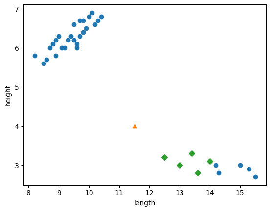
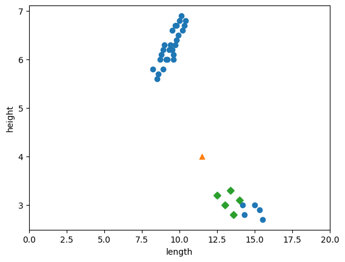
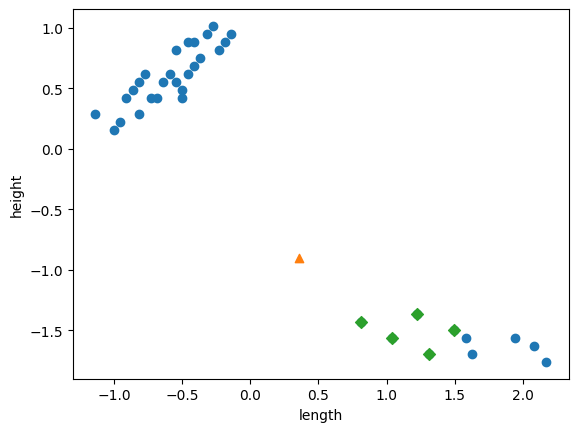
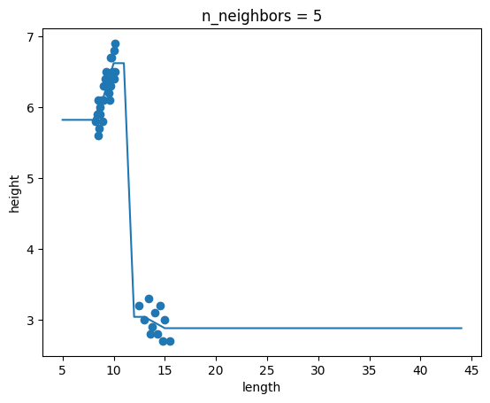
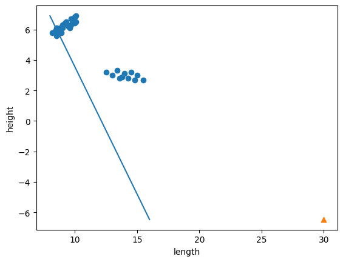
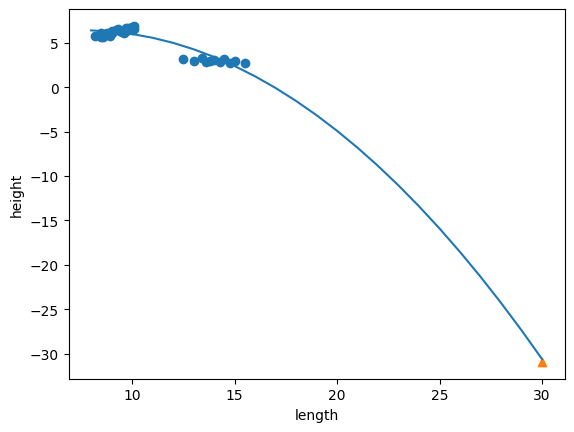

혼자 공부하는 머신러닝+딥러닝 · 3주차
2-2 ~ 3-3 손코딩 정리
핀치부리새 49마리의 부리 길이와 높이로 분류하고, 같은 데이터로 회귀했습니다. 2-2 · 3-1 · 3-2는 직접 코드를 쳐서 실행했고, 3-3은 교재 개념만 정리했습니다.
2-2 데이터 전처리와 분류
부리 길이와 높이 두 값으로 새의 종류(1 = 핀치부리새 A, 0 = B)를 맞히는 문제입니다.
코드
bird_data = np.column_stack((beak_length, beak_height))
bird_target = np.concatenate((np.ones(35), np.zeros(14)))
train_input, test_input, train_target, test_target = train_test_split(
bird_data, bird_target, stratify=bird_target, random_state=42)
kn = KNeighborsClassifier()
kn.fit(train_input, train_target)
print(kn.predict([[11.5, 4.0]])) # [0.]mean = np.mean(train_input, axis=0)
std = np.std(train_input, axis=0)
train_scaled = (train_input - mean) / std
test_scaled = (test_input - mean) / std
new = ([11.5, 4.0] - mean) / std
kn.fit(train_scaled, train_target)
print(kn.score(test_scaled, test_target)) # 1.0특징
- 두 특성은 한 덩어리로.
column_stack으로 합쳐 (49, 2)를 만들고, 타깃은 35개 1 · 14개 0으로 붙였습니다. - stratify가 클래스 비율을 지킨다. 없이 나누면 테스트 13개 중 1이 3개뿐이었는데, 넣으니 4개로 비율이 맞았습니다.
- 단위가 같아도 범위가 다르면 거리가 왜곡된다. 원래 이웃 거리는 1.28~2.66이었고, 그 거의 전부가 길이 차이였습니다.
- 표준화해도 예측은 0. 바뀐 것은 답이 아니라, 두 특성이 거리에 반영되는 비중입니다.
- fit은 훈련 세트에만. 테스트 세트는 훈련 세트의 평균·표준편차로 변환만 합니다.



3-1 k-최근접 이웃 회귀
타깃이 클래스가 아니라 숫자입니다. 부리 길이로 부리 높이를 예측하고, KNN 회귀는 이웃들의 타깃 값을 평균해서 답합니다.
코드
train_input = train_input.reshape(-1, 1) # (36,) → (36, 1)
knr = KNeighborsRegressor()
knr.fit(train_input, train_target)
knr.score(test_input, test_target) # 0.9817
mean_absolute_error(test_target, knr.predict(test_input)) # 0.1615knr.n_neighbors = 3
knr.fit(train_input, train_target)
print(knr.score(train_input, train_target)) # 0.9874
print(knr.score(test_input, test_target)) # 0.9800특징
- R²는 설명력, MAE는 실제 오차. 점수만 보면 감이 안 오니 cm 단위 오차(0.16)를 같이 봅니다.
- 입력은 2차원.
reshape(-1, 1)로 크기를 직접 세지 않고 행만 자동으로 맞춥니다. - k가 복잡도 손잡이. 작으면 훈련 데이터를 그대로 따라가 과대적합, 크면 완만해져 과소적합.
- 범위 밖에서는 평평. 이웃이 없으면 가장 먼 쪽 이웃의 평균으로 수렴합니다.

3-2 선형 회귀와 다항 회귀
KNN이 범위 밖을 예측하지 못한다는 것을 확인했으니, 이번에는 직선을 긋는 모델을 씁니다.
코드
knr.predict([[30.0]]) # [2.8] ← 15cm 근처 이웃의 평균
lr = LinearRegression()
lr.fit(train_input, train_target)
lr.predict([[30.0]]) # [-6.46]
lr.coef_, lr.intercept_ # -0.607, 11.746train_poly = np.column_stack((train_input ** 2, train_input))
lr.fit(train_poly, train_target)
lr.predict([[30**2, 30]]) # [-30.94]
lr.score(train_poly, train_target) # 0.8551
lr.score(test_poly, test_target) # 0.7745특징
- KNN의 2.8은 30cm에 대한 답이 아니다. 15.5cm가 데이터의 끝이라, 가장 먼 이웃 3마리 평균으로 수렴한 값입니다.
- 선형 회귀는 범위 밖도 계산한다. 다만 기울기가 음수라 30cm가 −6.46으로 떨어집니다. 계산은 되지만 현실적이지 않습니다.
- 제곱 특성 하나로 곡선. 모델은 그대로 선형이고, 입력에
x²을 붙였을 뿐입니다. - 직선보다 곡선이 낫다. 훈련·테스트 모두 0.83/0.72 → 0.86/0.77로 올랐습니다.


| 모델 | 훈련 R² | 테스트 R² | 30.0cm 예측 |
|---|---|---|---|
| KNN 회귀 (k=3) | 0.9874 | 0.9800 | 2.8 |
| 선형 회귀 | 0.8297 | 0.7235 | −6.46 |
| 2차 다항 회귀 | 0.8551 | 0.7745 | −30.94 |
점수만 보면 KNN이 가장 좋지만, 그 2.8은 30cm에 대한 답이 아닙니다. 선형·다항 회귀는 범위 밖도 계산하지만, 관계가 역방향이라 음수가 나옵니다.
3-3 특성 공학과 규제 (개념 정리)
3-3은 코드를 따라 치지 않고 교재 개념만 정리했습니다. 교재는 농어의 길이·높이·두께 세 특성을 쓰므로, 아래 수치는 교재 데이터 기준입니다.
코드
poly = PolynomialFeatures(degree=5, include_bias=False)
poly.fit(train_input)
train_poly = poly.transform(train_input) # (42, 55)
ss = StandardScaler()
ss.fit(train_poly) # 기준은 훈련 세트에서만
train_scaled = ss.transform(train_poly)특징
- 특성 공학은 조합 만들기. 원본 3개 → 2차 9개 → 5차 55개.
PolynomialFeatures가 제곱과 교차곱을 자동으로 만듭니다. - 샘플보다 계수가 많으면 외운다. 훈련 42개에 계수 55개 — 훈련 R²는 1.0, 테스트 R²는 −144.41.
- 규제는 계수에 벌점. 계수가 크면 예측이 크게 출렁이므로, 손실 함수에 계수 크기를 더해 눌러 줍니다.
- 릿지는 줄이고, 라쏘는 지운다. 라쏘 α=10에서 55개 중 40개 계수가 0이 되어, 실제 사용 특성은 15개였습니다.
| 모델 | 벌점 | 계수 | 특징 |
|---|---|---|---|
| 릿지 (Ridge) | 계수 제곱합 (L2) | 작게 | 0으로는 잘 만들지 않음 |
| 라쏘 (Lasso) | 계수 절댓값합 (L1) | 작게 또는 0 | 쓸모없는 특성을 쳐냄 |
| 모델 | 훈련 R² | 테스트 R² |
|---|---|---|
| 다중 회귀 (2차, 9개 특성) | 0.9903 | 0.9715 |
| 다중 회귀 (5차, 55개 특성) | 1.0000 | −144.41 |
| 릿지 α = 1 | 0.9896 | 0.9791 |
| 릿지 α = 0.1 | 0.9904 | 0.9828 |
| 라쏘 α = 1 | 0.9898 | 0.9801 |
| 라쏘 α = 10 | 0.9888 | 0.9824 |
α는 벌점의 세기입니다. 키우면 모델이 단순해져 과대적합이 잡히지만, 너무 키우면 훈련 세트조차 못 맞히는 과소적합이 됩니다.